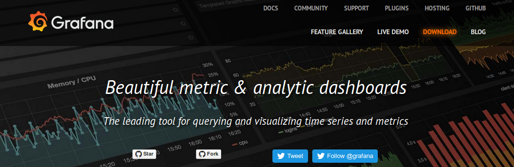

<style>
 .blue {
     color: #1b91ff;
 }
 .red {
     color: #ff2c2d;
 }
 .green {
     color: #17ff2e;
 }

</style>

<!-- ************************************************** -->

<section data-background="background.jpg">
  <h3>CNR-ISMAR in situ observations network: new approaches for an interactive, high performance, interoperable system</h3>
  <p>Stefano Menegon, Pierluigi Penna, Mauro Bastianini, Giuseppe Stanghellini, Francesco Riminucci, Tiziano Minuzzo, <b>Alessandro Sarretta</b></p>
  <p><small>alessandro.sarretta at ismar.cnr.it</small></p>
  <h5>CNR - Institute of Marine Sciences</h5>
  <p>IMDIS 2016 - Gdansk, October 12, 2016</p>
</section>

<!-- ************************************************** -->

<section>
  <h3>Index</h3>
  <ul>
    <li>Context: fragmentation, RITMARE, SDI, SOS, Data Policy</li>
    <li>Objectives</li>
    <li>Architecture</li>
    <li>Implementation: InfluxDB, Grafana (also as quick quality check for data), app, script to export and synchronize SOS, kapacitor</li>
    <li>Advantages</li>
  </ul>
</section>

<!-- ************************************************** -->

<section>
  <h3>ISMAR</h3>
  Short introduction of the Institute of Marine Sciences?
</section>

<!-- ************************************************** -->

<section>
  <h3>CNR-ISMAR in situ observations network</h3>
  Northern Adriatic Network
  <p><u>TODO: add map with location of the buoys</u></p>
</section>

<!-- ************************************************** -->

<section>
  <h3>CNR-ISMAR in situ observations network</h3>
  Northern Adriatic Network
  <ul>
    <li>Paloma mast (Gulf of Trieste)???
    <li>Acqua Alta oceanographic tower (Gulf of Venice)
    <li>S1 mast and E1 buoy (Emilia Romagna coast)
    <li>Telesenigaglia mast (Marche coast)
  </ul>
  <p>
    
    
    
    
  </p>
</section>

<!-- ************************************************** -->

<section>
  <h3>Past situation</h3>
  <p>Unharmonized network</p>
  <ul>
    <li>different managing system
    <li>separated databases
    <li>different validation procedure
    <li>non-standard publishing of data
    <li>non-common (or non existent) data policies
  </ul>
</section>

<!-- ************************************************** -->

<section>
  <h3>Goals</h3>
  <ul>
    <li>Unique visible access point for the ISMAR observational network
    <li>Archiving and storing historical data
    <li>real-time data streams for efficient operational model
    <li>Interactive and efficient system
    <li>Interoperability
    <li>Open data
  </ul>
</section>

<!-- ************************************************** -->

<section>
  <h3>RITMARE project</h3>
  <p><a href="http://www.ritmare.it/">www.ritmare.it</a></p>
  "Italian Research for the Sea" national flagship project
  <ul>
    <li>7 sub-programs:
      <ul style="font-size:30px">
        <li>SP1 - Maritime Technologies
        <li>SP2 - Technologies for Sustainable Fishing
        <li>SP3 - Planning of the Maritime Space in Coastal Waters
        <li>SP4 - Planning of the Deep Marine Environment and the Open Sea
        <li class="fragment highlight-red">SP5 - Observation System for the Marine Mediterranean Environment
        <li>SP6 - Research, Training and Dissemination Structures
        <li class="fragment highlight-red">SP7 - Interoperable Infrastructure for the Observation Network and Marine Data
      </ul>
  </ul>
</section>

<!-- ************************************************** -->

<section>
  <h3>Architecture</h3>
  <ul>
    <li>DB raw
    <li>Quality control
    <li>DB Qc
    <li>Publication DB
    <li>Standard output services
      <ul>
        <li>OGC SOS
        <li>NetCDF
      </ul>
  </ul>
  <p><u>TODO: add architecture schema</u></p>
</section>

<!-- ************************************************** -->

<section>
  <h3>Implementation</h3>
  <ul>
    <li>InfluxDB: open source time-series data storage<br/>
  </ul>
  <a href="https://www.influxdata.com/time-series-platform/influxdb/">
    
  </a>
  <ul>
    <li>Grafana: open source dashboards for querying and visualizing time series and metrics <br/>
  </ul>
  <a href="http://grafana.org/">
    
  </a>
</section>

<!-- ************************************************** -->

<section>
  <h3>Parameters and variables acquired</h3>
  <ul>
    <li>...
    <li>Use of SeaDataNet vocabularies
  </ul>
</section>

<!-- ************************************************** -->

<section>
  <h3>Open science approach</h3>
  <ul>
    <li>Open access to data
    <li>Standard open licences for access and reuse:<br/>
      <a href="http://creativecommons.org/licenses/by/4.0/">Creative Commons Attribution 4.0 (CC-BY) </a>
    <li>Publication of yearly datasets on <a href="https://zenodo.org/">Zenodo</a> with DOI
    <li>Publication of a Data Paper with relevant aggregation of data
  </ul>
</section>


<!-- ************************************************** -->


<section>
  <h3>A quick hands-on</h3>
  <h5><a href="http://rmm.dati.ismar.cnr.it">http://rmm.dati.ismar.cnr.it</a></h5>
  
</section>

<!-- ************************************************** -->

<section>
  <h3>Additional bonus: ISMAR Data app</h3>
  <p><u>Still in Beta!</u></p>
  
</section>

<!-- ************************************************** -->


<section>
  <h3>Conclusions</h3>
  <ul>
    <li>From a series of unconnected systems to a real network
    <li>Optimization of quality controlled data flows
    <li>Use of open source technologies and international standards
    <li>Vision towards open data access and sharing
  </ul>
</section>

<!-- ************************************************** -->

<section>
    <h3>CNR-ISMAR in situ observations network: new approaches for an interactive, high performance, interoperable system</h3>
    <small>
    <span xmlns:cc="http://creativecommons.org/ns#"
          property="cc:attributionName">by Menegon S., Penna P., Bastianini M., Stanghellini G., Riminucci F., Minuzzo T., Sarretta A.</span>
    <br/>
    is licensed under a <a rel="license" href="http://creativecommons.org/licenses/by/4.0/">Creative Commons Attribution 4.0 International License</a>.

    <br/>
    <a rel="license"
       href="http://creativecommons.org/licenses/by/4.0/">
        
    </a>
    <p>It can be viewed online <a href="https://cnr-ismar.github.io/presentations/imdis2016/index.html">here</a> and downloaded <a href="https://dx.doi.org/10.6084/m9.figshare.4001448">here</a>.</p>
    <p>To cite this work please refer to:
    <br>
    <blockquote>
      &ldquo;Stefano Menegon, Pierluigi Penna, Mauro Bastianini, Giuseppe Stanghellini, Francesco Riminucci, Tiziano Minuzzo, Alessandro Sarretta (2016). CNR-ISMAR in situ observations network: new approaches for an interactive, high performance, interoperable system. DOI: <a href="https://dx.doi.org/10.6084/m9.figshare.4001448">10.6084/m9.figshare.4001448</a>
    </blockquote>
    </small>
    </section>

<!-- ************************************************** -->
